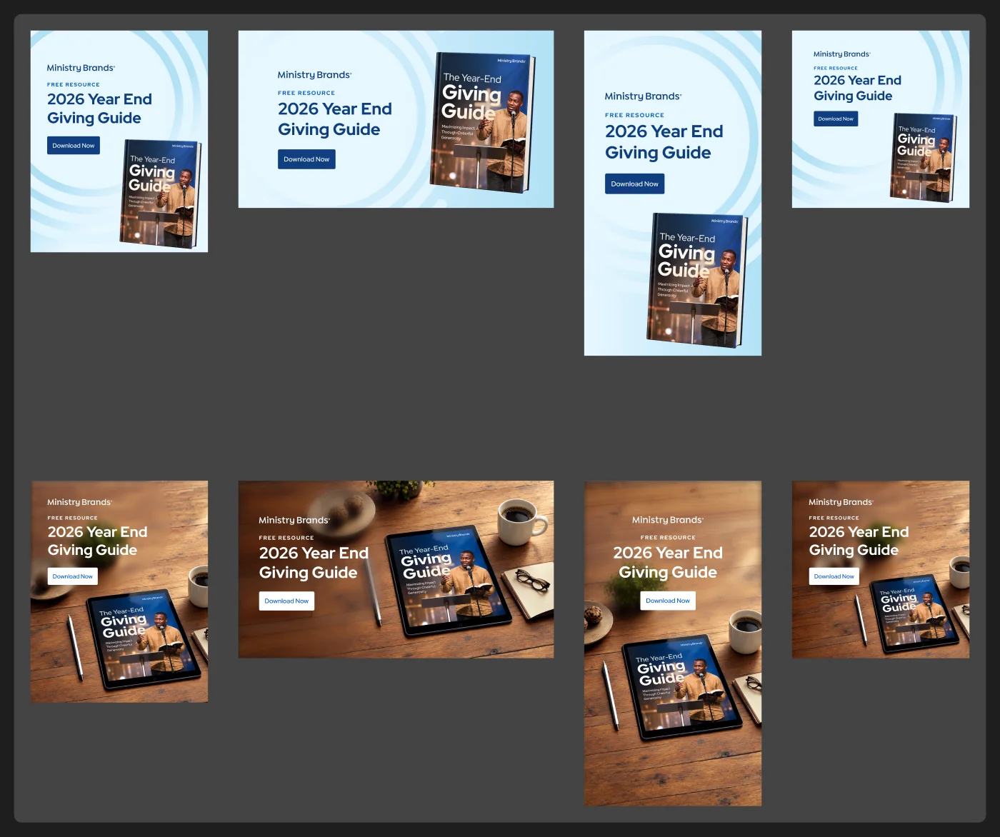
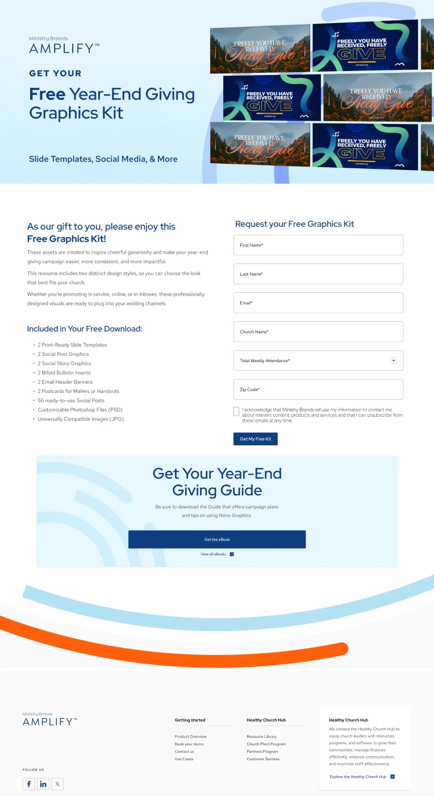
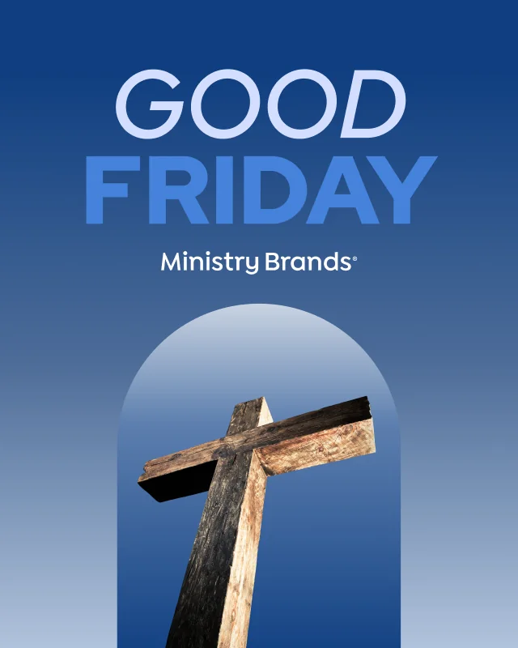

Work / Ministry Brands
Marketing for the software churches run on.
For four years I made campaigns, ads, and short films for Ministry Brands’ software brands, aimed at pastors, church staff, and finance teams.
- Role
- Video & Graphic Designer
- Years
- 2022–2026, remote
- Work
- Campaign creative, ads, landing pages, customer films
Customer stories
Real customers, in their own words
For the Ministry Spotlight series I made short films with churches that use Ministry Brands software. A pastor or staff member explains what changed for their church.
 ▶ Watch on YouTube
▶ Watch on YouTubeRestoration Community Church · moving to one platform
 ▶ Watch on YouTube
▶ Watch on YouTubeCross City Church · rethinking online giving
Product launch
Launching Amplify to church staff
Amplify is Ministry Brands’ church software platform. The campaign sold one idea, that connection changes everything, then broke it into specific reasons to care: better email and texting, simpler accounting, and healthier teams.
Lead generation
A free guide, and everything that pointed to it
Year-end is when churches think hardest about giving. The campaign offered a free Year-End Giving Guide and graphics kit, with paid ads in every size and a landing page to collect sign-ups.


Social
Posts for the days customers care about most
Simple, bold posts for the church calendar.

Made while I worked at Ministry Brands. The brands, products, and photography belong to Ministry Brands and are shown as samples of my work.